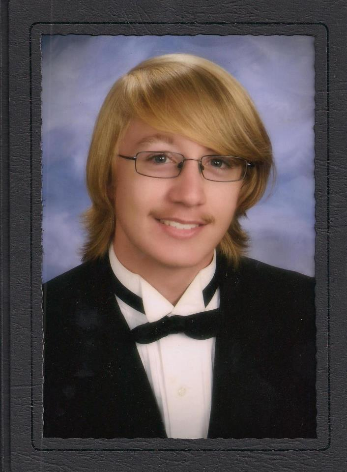

 My name is Scott Michael Raymond, I am a 21 year old student at California State University San Bernardino, where I am currently pursuing a degree in Computer Systems, with a focus on systems administration, as well as working as an Information Technology Student Assistant.